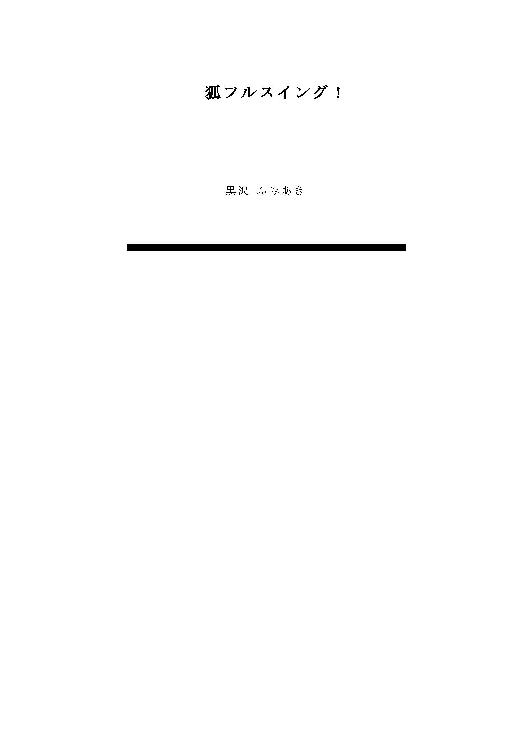
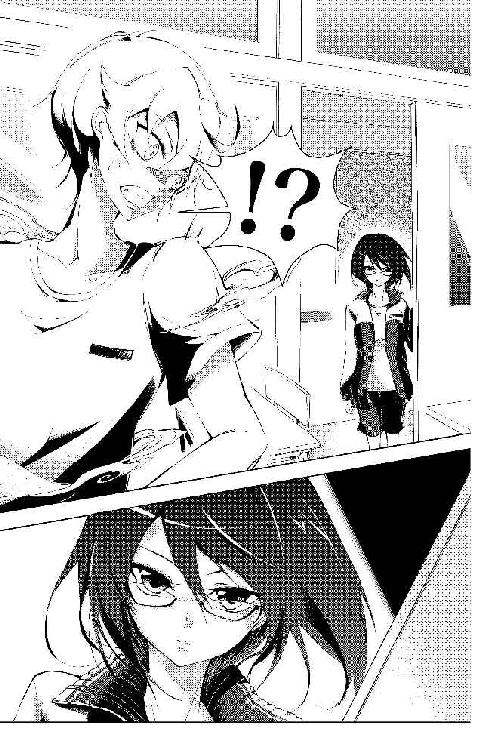
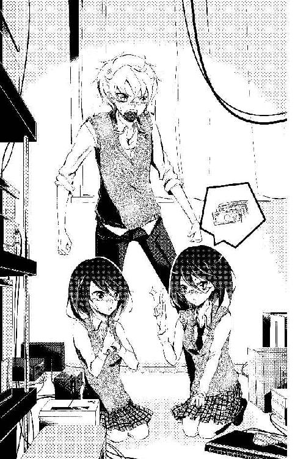
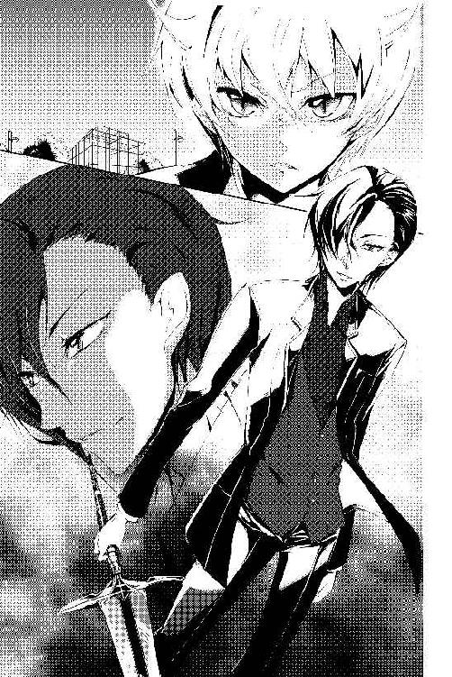
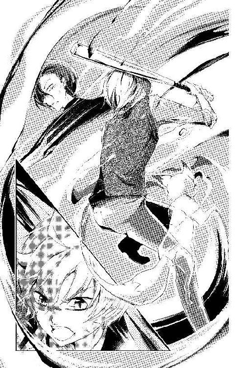
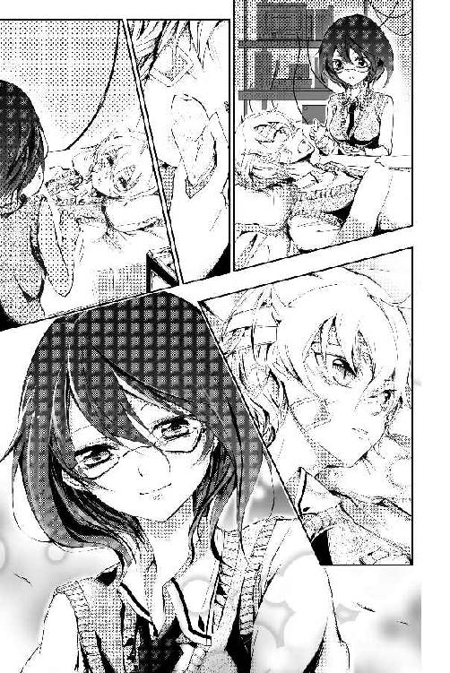
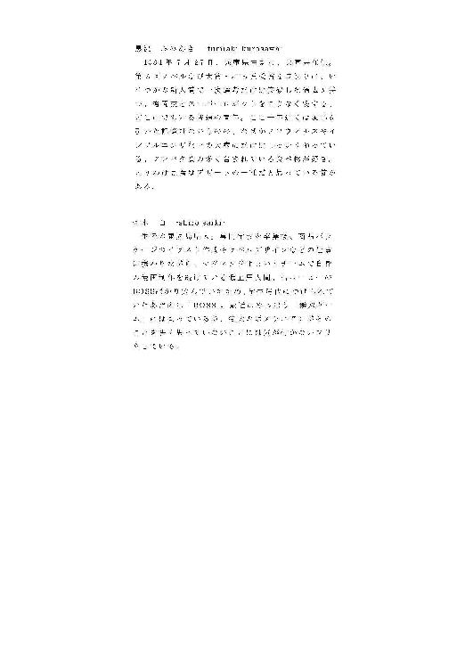

| 狐フルスイング！ | |
| 黒沢 ふみあき | |
| (2016) | |

狐フルスイング！
口絵・本文イラスト 斎木白
目 次
○
「ていっ！」
一喝すれば白い煙が足下からもうもうと噴き上がり、それが瞬時に千僧堂（せんぞうどう）真狐（まこ）の全身を包み込む。霧が晴れるまでは時間にして一秒弱、そこにはもう制服姿から体操着姿へと変化した真狐がいた。まずまずの出来だと自惚れてみる。
「よし、んじゃ早いとこ行くかな」
と真狐は早々に勢いをつけたが、その流れに「千僧堂くん」という言葉が重なり思考が停止する。条件反射的に声の聞こえた教室の出入り口を振り返ってみると、そこには一人の女子生徒の影があった。
「今の、何？」
廊下から窺うようにしてこちらを見ていたのはクラスメイトである相馬のり子だ。
馬鹿な、この時間は男女共に体育のはずなのに――病欠やその他の可能性を考慮しない、真狐の底の浅さが露見した。

昨夜、ついつい寝る間も惜しんで一気読みしてしまったシリーズ物の漫画が脳裏をよぎった。主人公である男子高校生がひょんなことから知り合ったヒロインを、悪の手から体を張って守るという筋の物語だ。不器用で馬鹿で一直線、けれどもヒロインを必死に守ろうとする姿は正義漢そのもので、そんなキャラクタが自分と同じ年代設定であることが熱を上げさせた。自身を主人公へと投影し、感情移入する分だけページを繰っていく。平積みにされていくコミック本の山が雪崩れ（なだれ）ようとも意に介さない。
そうして気が付けば朝だった。窓の外は明るくなり始めていて、目を覚ました鳥たちが嬉しそうに囀って（さえずって）いる。最終巻がハッピーエンドで結ばれたことに涙するのも束の間、真狐は慌てるように布団に潜ったが、結局はそれがいけなかったようで――。
「やっちまった！」
教室の扉は横に放り投げるようにして開けた。真狐は自分の席へと駆け寄る傍らそう叫ぶ。
「こんな日に遅刻しちまうなんてよ！」
黒板の上に掛かった時計を見れば自分がどれだけ遅刻したのかを痛感できる。席へと到着した真狐は提げていた鞄を机に投げ、急いで口を開けた。乱暴に手を突っ込んで引き抜いたのは体操服だ。
「みんなマジ怒ってるだろうなぁ」
そんなことをつい口走ってしまうのは、この時間行われている授業がクラス対抗の野球だからだ。対抗とは言っても学年全体が参加している大規模なものではなく、単に交流がてら隣のクラスと張り合うだけのものなのだが、真狐にしてみればそれは特別な意味を持っている。
決して自慢する訳ではないのだが、真狐は運動神経が抜群に良い。その延長で野球の腕前も高く、今回の一戦においてもチームの主力メンバーとしていの一番に数えられていた。与えられたポジションはピッチャー、打順も四番と申し分ない。何か競争事となればいつも広告塔のようにして選出される真狐は、みんながどれだけの期待を自分に込めてくれているのかを理解している。そんな中での大失態だ、思わず呟きたくなるのも仕方のないことだった。
「はぁ、何やってんだよ俺」
けれども悲観めいてこぼすのには他にも理由がある。これまでの人生、運動能力を高く打ち上げることに専念し過ぎた結果、真狐の学力は超が付くほどの低空飛行だ。ゆえに、真狐にとって体育とは唯一己を開放できる時間でもあった。それを自分自身の体たらくさが原因で失ってしまうことには筆舌にも尽くしがたい喪失感を覚える。弱々しくも自分を叱咤するのは、そんなあれこれへの償いだ。
「しゃあねぇな」
と、掴んだ体操着を見つめる真狐は呟いた。再び時計を見遣る。「やっちまったもんは仕方ねぇ、でも犯した失態（ミス）は挽回するのが男ってもんだ」
これは昨夜の主人公の影響だ。だがしかし、この発言の真意は別段「遅れても、全力プレーで試合に貢献」なんぞという輝くスポーツマンシップに則ったものではない。もちろん真狐はその気構えを十二分に持ち合わせてはいるが、だからこそ、この発言には違った意味合いが含まれているのだった。タイムロスを少しでもなくすため、着替えは手っ取り早く術で済ませてしまおう――そんな意味合いが。
「こんな理由で術使っただなんてばれたら、それこそ拳骨じゃ済まないんだろうけどな」
母親の顔が脳裏をよぎる。昔のことが思い出されて、真狐は思わず身震いした。
千僧堂真狐は人間ではない、化け狐と呼ばれる一族の出だ。世間一般に知られている狐の亜種で、遠い昔に派生した。言語を理解し、自身やその他の物質を変化さすことのできる能力を持っているのが特長で、昔話や伝承に登場する化け狐たちはおおむね自分たち一族がモデルになっているのだというのは長老の言である。その適応能力の高さから古来より人間社会へ溶け込んだ生活を送っており、真狐はその一族の末端に位置している。先述した母親ももちろん狐で、一族の者は皆例外なくその正体を隠して生きている。拳骨の思い出はそれを図らずも破ってしまった真狐に対する仕置きの記憶だ。
日曜日のデパート館内。母親と連れ立つ、まだ五歳だった子供の真狐は好奇心さえ上回る疲労感に打ちひしがれていた。溢れかえる人の山、まだ慣れていない化け術。おもちゃが見たい、と我が儘を通して実現した今回のお出かけだったが、その願望は早くも後悔となりかけていた。とぼとぼと元気なさげに歩く真狐に母親は「大丈夫？」と声を掛けるが、しかし幼くてもそこは男の意地、「大丈夫」と我慢して応える。「そう、でもしんどくなったらすぐお母さんに言うのよ」との約束にも気丈に頷いた。
だが次の瞬間には狐の姿へと化け戻っていた。脇に陳列されていたロボットのプラモデルにふと心が奪われたのだ。白い煙がもうもうと上がり、すぐに周囲は神隠しだ、テレビの撮影だと盛り上がる。慌てた母親が「この子、手品がうまいんです！」と遮二無二叫び、幼狐を抱えてその場を脱出した記憶は今でも鮮明だ。事なきは得たが、強烈な拳骨はこの際に拝受したものである。
――だが、しかし。
まぁ待たれよ、と真狐は誰に向ける訳でもなく思う。苦い過去なんかも長々と述べはしたが、結局のところ自分はもう子供ではないのだ。全員が出払った教室内を見渡せば、「もう当時と同じ轍は踏むまい」という決意と確信が湧いてくる。
そうして真狐はろくすっぽ確認もせぬまま化け術を行使した。話は冒頭へと遡る。
○
相馬のり子は前代未聞の無表情（ポーカーフェイス）を顔に貼り付けたとされる女子生徒で、素行も一切の謎に包まれているという不気味さから真狐は怖くて一度も喋ったことがない。級友であるということ以外に接点らしい接点はなく、よもやそんな彼女とこのような形で交差することになろうとは――真狐の表情は見る見る内に苦っていく。
「お前......何でここに......」
「忘れ物、取りに」
吹き出る汗の量が事の致命度を裏打ちしてくる。落ち着け、俺！ 言い聞かせるが、本日二度目の失態（ミス）に傷付く自分にはなかなか届かない。ぬかるみにはまったタイヤのように思考が空回りする。
「......見たのか？」
苦渋の末に絞り出した言葉と言えばそれだった。白煙を上げて制服姿から体操着姿にへと変貌した言い訳をどう繕えと言うのか。混乱する真狐には思いつくはずもない。
「見たような、見てないような」
無表情に歩み寄ってくる相馬の威圧感がハンパない。その一歩一歩に気圧されそうになる。
「千僧堂くんって、何？ 人間じゃないの？」
実に簡潔に正鵠を射られた。目前に迫った小柄な眼鏡少女は「もう何でもお見通しなのよ」とでも言わんばかりに真狐を見据えてくる。
「人間じゃない......訳がないじゃない......か？」
きっぱりと断言できないところが既に怪しさ満天であるとは自分でも思う。けれども生来的に嘘を吐くのが苦手な性分なのだ、いきなりそれを克服しろと言われても無理な話だ。
「人間じゃない、わけじゃない」
相馬は吟味するように繰り返し、そして突きつける。「人間じゃない、わけじゃない。じゃあいったい何なの？」
「何なんでしょうね......」
出来ることなら今すぐにでもこの場から逃げ出したかった。後は野となれ山となれの精神だ。
けれどもここは学校だ、逃げたって必ず尾っぽを掴まれてしまう閉塞した空間なのだ。ゆえに一時の感情に従ってこの目撃者から逃げおおせたとしても何の解決にもなりはしない。彼女に友達がいるのかどうかはこれまでの経緯的に定かではないが、火が立った場所には煙も立つのが理だ。ならば今はこの場にどっと腰を据え、この少女の口を完璧に塞ぐことこそが残された唯一の道であるということは、軽率な行動が専売特許の真狐にも知れるところである。が、しかし、
「もしかして、狐か何か？」
女の勘は鋭いと言うが、ここまで来ればれっきとした刃物だった。その鋭利な切り口が真狐の二の句を容易く封じる。
「昔から化け狐の存在って伝えられてきてるし、そういう話もたくさん見聞きしたことあるし、私って意外にそういうの信じる性質（たち）だし。何より白い煙とかまさにそれっぽいし」
「お前、何言ってんだよ......」
必死に繕おうと試みるが、それもやはり無理な相談だった。タイヤはもう完全に泥の中なのである。
「いやいや、ありえねーし。俺が狐とか、そんなのマジありえねーし」
もう幼稚染みた反駁でも良い、こうなりゃ知らぬ存ぜぬの一点張りだ――しかし、それに対して相馬は「大丈夫、言い触らさないから」。取り合う素振りも見せずに主張する。
だが、いくつもの要点を踏まえて――というか飛び越して結論に至ったらしい相馬の主張は実に当を得ていた。それは十全な言い逃れができそうにもないと直感していた真狐の意思をいとも簡単に屈服させるに十分な発言だった。
言い触らさないでいてくれるのであれば――つまりは母親にこの違反行為が伝わらないのであれば。そんなすがるような思いが真狐の口を滑らせる。
文字通り、滑らせた。
「............まぁ、そういう可能性だってあるよな」
「そう、本当に狐だったんだ」
誘導されたのだと気付くのには時間が掛かった。確信犯的に光る相馬の瞳がそれを告白（ばら）していた。開いた口が金魚のようにパクパク動く。担がれたことに怒りも沸くが、
「た、頼むから黙っていてくれないか」
すぐに懇願するような口調になるのは相手の行動が読めないからだ。下手に刺激すべきではないと判断する。
「何を？」
わかっているくせに訊き返してくるのはこいつの性格なのか。
「何をって......その、俺が化けたってことだ」
「つまりは狐だってこと？」
「そ、そうだ、俺が化け狐だってことだ。みんなに知られるとまずいんだ」
「ふうん、まぁそうよね」
相馬は実に無感動的に喋る。その冷淡とも言える不気味さが真狐の危惧感を増幅させる。だが今は相手の言動の端々に見え隠れする可能性にすがりつくしかない。
「なぁ、頼むよ相馬。本当にまずいんだ、周りに知られると。拳骨とかじゃ済まない」
その程度の折檻で済まないのは真実だ。
しかし相馬が食い付いてきたのは別の事柄についてだった。
「千僧堂くん、私の名前知ってたの？」
僅かだが意外そうに訊いてくる。知ってたも何も、クラスメイトの名前ぐらいは一通り覚えるものじゃないのか、割と自然に。却って困惑してしまう真狐の姿があったが、
「当たり前だろ、クラスメイトなんだから！」とすぐさま友情論で攻めてみた。
「ふうん、まぁそうね」しかし見事に空振りだ。
「いや、今はそんな話じゃないんだ」
危うく脱線しかけた論点を慌てて戻す。時計をちらりと見遣ればあれからもう随分と時間が経過していた。これじゃあ何のために危険を冒してまで化けたのかわかったものじゃない。早くこの場を収めなければと真狐は一人焦る。
「頼むよ相馬、黙っていてくれるなら俺何だってするからさ。日直とか掃除当番とかいくらでも代わるし、何だったらパシリにしてくれても良い」
情けない提案であることは承知の上だったが今はこれぐらいしか思いつかない。果たしてこの案が通るかどうかは当人のみぞ知るというところだが、
「ふうん」
「相馬ぁ」
「おもしろいのね、千僧堂くんって」
全く笑ってはいないが、わかったわ、と言い添えて相馬は真狐の瞳を覗いてきた。あまりの唐突さに思わずどきりとなるのは化け狐の雄でも同じことだ。生まれたときから人間社会にいるため人間の女性に興味があるのは至極当然の成り行きであり、また相馬は近くで見ると案外に可愛いのも事実だった。
「じゃあ私と取引をしましょう」
願ったり叶ったりの返答だった。事を穏便に済ませられる手段があるのならそれに越したことはない。日直や掃除当番の代わりという案は等価交換の原則的に不採用だったみたいだが。
「私、こう見えて個人的な仕事をしているの。でも一人だと色々と厳しいこともあって。だから千僧堂くんにはその手伝いをお願いしたいのだけれど」
――仕事？ 手伝い？ 尋ねるべきことはいくつもあったが先ほどから時間にお尻を叩かれている真狐は二つ返事で承諾する。詳しい話はあとだ、どうせ断れやしないんだから。
「話が早くて良かった」
そう呟く相馬をあとに残し、真狐はすぐさま教室を出ようと走り出した。失礼かとは思うが取引は成立したのだ、気に障ったならあとから詫びれば済むだろう。
「千僧堂くん」
廊下に出るか否かのタイミングで相馬が声を掛けてきた。背中で聞くわけにもいかないと、真狐は顔だけで振り返る。
「ジョーカー」
一向に意味はわからなかったが、相馬はそれだけ言えば視線を外したので真狐もそれで落ち着いた。日頃走っては怒られている廊下を全速力で駆け抜ける。
ジョーカー、ジョーカー、と念仏のように繰り返すも、校庭に着いたときにはすっかりと忘れた。
試合には途中参戦できた。平謝りの中で入ったバッターボックスだったが、窮地に陥っていた自軍を見事豪快な逆転ホームランで勝利に導くことには成功した。
『千僧堂くん、もう少ししたら左手に大きめの公園が見えるから。そこまで奴を誘導して』
緊張しながら夜の住宅街を歩いていると、そんな指示が耳の中へと埋め込むタイプのイヤホンから流れてきた。小型かつワイヤレスなこの通信機器は隠し持つのにうってつけだが、けれどもその隠蔽性と引き替えにマイク機能は備わっていないので指示はいつも一方的に打ち切られる。質問どころか指示を仰ぐことさえできない状況はいつも真狐を不安にさせるが――もういい加減慣れたと言えば嘘ではない。
秘密がばれてしまったあの日から、もう一月が過ぎていた。
『振り返っちゃ駄目。大丈夫、奴はきちんとついてきてるから』
いつもながら冷静な口調だ。ストーカーが相手というのは真狐にとって初めての経験だが、こうして順調に事が運べているのも一手に彼女の存在があるからだろう。
相馬のり子――中高生の依頼者を専門とする、何でも事件解決屋。特に定まった名称はないようだったが、それが彼女の裏の顔だった。彼女の正体、そして何よりそんな職業が成り立つのだということに当初は驚きを禁じ得なかったが、実際にこうして事件に立ち会っていくとその需要の多さが実感できる。一ヶ月経つが依頼はこれで何件目だろう、二桁に迫る勢いなのは間違いない。現代の若者にはこれほど悩みの種があったのか、脳天気に日々を過ごしてきた真狐にすればそれもまた驚愕の事実だった。
『見えてきた、その公園。入り口から向かって右奥に公衆トイレがあるからそこまで行って』
指定された公園は確かに少し大きめの敷地を有していた。遊具と遊具の間隔が広く、ベンチも柵に沿っていくつか設置されている。しかし街灯の数まではさすがに足りていないようで、うっすらと闇に落ちた園内にはこの時間人影はない。
真狐は指示にあった公衆トイレへと向かい歩を進める。途中まで行けば背後から砂を蹴る音が聞こえてきた。相馬の言う通り、ストーカーはきちんと食い付いているらしい。
『女子トイレの奥には換気用の窓があるのだけれど、千僧堂くんは中に入ったらすぐにその窓から外に出て。背後から奴を追い詰めるから』
そして通信は切られる。耳の中には砂嵐のような余韻が残るばかりだ。
真狐は改めて自分の姿を確認した。着ている服は通っている高校のものではない、隣の市にある高校の制服だ。しかしそれが男物ではないことが真狐の矜持を傷つける。真っ白のカッターシャツは同じだとしても、その首元に付けられているのは蝶々結びの赤いリボン、膝の上ではスカートの裾が揺れている。すうすうと風が抜けていく股に乙女のような恥じらいを覚える自分が変態に思えて悲しくなる。
女子トイレの中に踏み入るという行為には一抹の不安を覚えた。服装だけでなく、中身も今は女なので――ストーカーをおびき出すために依頼者である少女の姿を借りているのだ――誰かに見られたからといっても心配することはないのだが、元が男の真狐にはやはり戸惑いを覚える瞬間だ。
ピンク色のタイルが貼られた明るい壁に個室のみが並んだ通路、その通路の奥には小さな換気用の窓がある。入り口から覗くその光景はまるで別世界だ。
『大丈夫、中に一般人がいないのは確認済みだから』
そういう問題でもないんだけどな、と真狐は一人ごちる。しかしここでためらってはいられないのも確かで、後ろからは砂を蹴る音が着実に近付いてきている。ままよ！ と真狐は覚悟を決めて足を踏み出し、足早に突き当たりまで駆けては僅かに開いていた窓を全開にして身を乗り出した。窓枠は小さいが問題ない。少女サイズに縮んでしまった自分の体が有り難くも恨めしい。
『その調子よ、千僧堂くん。そのまま入り口の方にまわって』
言葉とは裏腹に無感動な相馬の声は続けて次の指示を与えてくる。いったいどこからモニタリングしているのかは知らないが、適時通信を投げてこられるのは案外近くにいることの証明かも知れない。好奇心から視線を泳がせてみるが、しかしすぐに「早く」と訂正が入り断念する。
入り口側へとまわり建物の陰から僅かに顔を出す。そこには一人の中年男性が立っていた。腹が出ているのと髪の毛が散らかっているのはこの距離からでも視認できる。偏見に違いないが、ストーカー犯罪を起こしそうな人間に見えるかどうかと問われれば、すんなり「イエス」と頷けてしまうような人物には類せた。
『顔引っ込めて。突入のタイミングはこっちがするから』
言われたように頭を引っ込めて約十秒、突入の指示が下りたことにより真狐は動いた。変身を解いてから今度は黒スーツを着た強面の青年へと化け直す。乙女の呪縛から解き放たれたことに一安心覚えるも、しかしこのあとの展開に真狐は再び憂鬱となる。
「おうこらおっさん、そんなとこで何しとんや」
慣れない口調はむず痒いが、練習してきた甲斐もあって形にはなっていると思う。真狐が語るのは威圧されたが最後、免疫のない人間ならば大抵は臆してしまうという日本最強の喧嘩言語・関西弁である（相馬論）。どうして真狐がこんな言語を習得するはめになったのかは追々わかるとして、事実、個室の中を覗き歩いていた中年の犯罪者は狐に摘まれたような顔でこちらを振り向いた。
「自分あれやろ、最近お嬢さんに付きまとっとるっちゅうストーカーやな」
これももちろん相馬が考案した設定だ。クライアントの少女は実はどこぞの組の会長の娘で、真狐はその組の組員役。偶然を装いながらあとをつけてきた、という状況だ。
「お前知らんで。こんなことやっとったら命いくつあってもそら足りん思うけどな」
「い、いや、これはその、違うんです！」
睨みを利かすと中年の犯罪者は簡単に動じた。少し悪いような気もしたが、しかし元を正せばこいつが悪いのだ。そうなれば正義感は強い方だと自負する真狐が手を緩める理由はどこにもない。
「親父はもうじき組挙げて犯人捕まえる言うとったで。そのあとのことは恐ろしくてよう言わんけど」
聞く限り実害はなかったというが、それでも毎晩塾帰りに不審な男につきまとわれたとしたら誰だって不安になる。それが年端もいかない少女であれば尚更だ。最初は警察に相談したらしいのだが、周辺のパトロールを強化すると約束しただけでこの件は終わりにされた。彼らは実際に事が起きるまでは有用的に動いてはくれないのだ。
そこで少女が求めたのは風の噂で伝え聞いた『事件解決屋』という存在だった。料金さえ払えばどんな事件や相談事も見事に解決してくれる、それも料金は全てが解決してからの後払いでも良いという点が、多かれ少なかれ不信感を抱く少女の心の壁を溶かした。依頼があったのはたったの二日前、この迅速さも少女の信頼を得るのに一役買っているに違いない。
「すみません、すみません！」
と先ほどから平謝り一辺倒の中年男性は見るに堪えない。挙げ句には「お金ならいくらでも払いますから！」と自ら財布を取り出し入っているお札を全て抜き出す始末だ。
いやそこまでは、と言いかけたが、そんな真狐の道徳を通信が妨害する。「黙ってて」簡潔に告げられ、開きかけた口を閉じる。
男は数枚のお札を床に並べ、そのままの勢いで地面に額をこすりつけた。このまま放っておけば次はどんな行動に出るのだろうかと興味も沸いたが、それはいくらなんでも人道に背く。自分まで腐ってどうする、と猛省だ。
そんな状態が数十秒続いた末にやっと次の通信が入る。
『懲りたんなら行けって言って』
真狐はその指示に従った。男は救われたように顔を上げ、「ありがとうございます！」と叫ぶがまた額を床に落とす。埒が明きそうにないのでもう一度「行け」と言ったのは真狐のアドリブだ。男は覚束無い動作ながらもすぐに立ち上がり、そそくさと真狐の横をすり抜けた。
『次はないからな』
「次はねぇからな！」
はいっ！ という男の悲鳴が夜の公園に響いては消えた。
真狐は床に残された数枚のお札を拾い上げ、次の指示を待つ。悪を退治したのは素直に痛快だが、この残された現実感にはあまり素直に喜べない。何だかあまりにもリアルな気がするのだ、高校生的じゃないというか。しかし予想通りと言うべきか、
『そのお金持って集合場所に帰還して。状況は終了よ』
金儲け主義者＋守銭奴――これは一ヶ月前には想像だにできなかった、相馬のり子という少女の真の面である。
真狐はトイレを出て夜空を仰いだ。星は見事に輝いている。
何でこんなことになってんだろう――考えてみるが、答えは過去の過ちにあるのだとすぐに思い至るのが情けない。
○
集合場所として定めていたのは相馬の家だ。閑静な住宅街の中に建つ一軒家で、彼女の部屋は二階にある。今回の現場からはほど近かったが、感傷に浸っていた真狐が帰還したのはある程度時間が経ってからのことだ。
「お前、あんな設定にしたのもあいつから金をぶん取りたかったからだろ」
「ぶん取るだなんて心外。このお金はあの犯罪者が勝手に置いていったものなのに」
部屋自体にはもう何度も訪れたことがあるので緊張はしないが、それでも女の子の一人部屋に居るというのはどうにも据わりが悪い。それを隠そうと不躾に口調が荒くなるのは相馬に見抜かれているのだろうか。
「私たちは別に金銭を要求した訳じゃない。あの男が忘れていったものを拾ってあげただけなのよ」
「なら拾ったものは交番に届けるのが義務だ」
「義務は拾った千僧堂くんにあるの、私には関係ない」
無茶苦茶だ、と真狐は頭を抱える。偶然だ、拾っただけだと言い張る目の前の少女ではあるが、その眼鏡の奥を注視してみれば手にしたお札を勘定することに快楽を見出しているのがすぐに知れる。
部屋に通されるや否や、「お疲れ様」の一言もなく握っていたお札は鮮やかな手つきで掠め取られた。抵抗する間もないほどで――まぁ抵抗したところで結果は一緒なのだが――真狐は呆然とする他なかった。彼女が金儲け主義者とされる所以（ゆえん）である。
「これは犯罪って言うんじゃないのか」
「それも心外。犯罪者はあっちよ」
真狐との会話も片手間に、お札を数え終えた相馬は「意外に持ってたわね」と確信的に呟いて腰を上げた。部屋の隅にある机まで慣れた足取りで行き、置かれた金庫にそれを収める。真狐が帰還するまでの間に依頼者から受け取ったという報酬も一緒だ。それから再び真狐の前に戻って床に腰を下ろす。
相馬の一連の動作の最中、真狐は視界の片隅で漫然と部屋の中を見渡していた。女子の部屋を観察する行為は男としてなっちゃいないと思わないでもないが、それにしたってこの部屋は異様なのだ。少なくとも女子高生の部屋じゃない。
部屋内には二人をぐるりと囲むようにして棚が並び、その上には見たこともないような機械類が雑多に積まれている。収まりきらなかった機器たちはもちろん床にその居場所を求め、正直に言って歩くのさえままならない。慣れた足つきで、と先ほどの相馬の足取りを描写したのもそのためだ。意図的に暗く設定しているとしか思えない照明の下では何十本ものケーブルが垂れ下がり床を這い、モニターの群れが怪しく光っている。至るところに貼られたメモには異界言語を想像させる複雑難解な数式や文章が並び、初めて訪れたときには偽りなく度肝を抜かれた。座るスペースを確保するのにさえ時間が掛かり、「どうしてこんな場所を集合場所にしたんだよ」と小言を口にしたことを覚えている。「私に都合が良いから」と一蹴されたのは言うまでもない。淡く抱いていた女性像といったものが虚しく崩れていくのが真狐には確かに感じられ、心の奥で涙した。
「それにしたって一向に片付かないよな、この部屋って」
一旦話を逸らす。汚い、と率直に口に出さないのはせめてもの優しさだ。
「仕事で必要なものばかりだもの、片付ける必要性が皆無」
落胆する真狐が「黙って本でも読んでりゃそれなりに可愛い子なのにな」と思うのは本音だ。口に出せば「余計なお世話」と言われるのは目に見えているので言わないが。
「でもさ、警察に突き出さなくても良かったのかよ」
話を戻す。思い返せば今回自分たちがしたことと言えば怖い人間を装って相手を脅しただけである。法的処置は何も施していないし、再犯防止に使えるようなネタが残っているわけでもない。ああいう人種はほとぼりが冷めればまた同じ事を繰り返すものだと真狐は考えている。そういった意味ではやはり警察に事の後始末を委ねなかったのは判断ミスではないのだろうか。
「大丈夫、安心して」とそんな懸念はよそに相馬は至って平常だ。「ああいう人種はヤクザみたいな人たちが一番怖いの。だから絶対に、もう二度とあの子の前には現れない」
「でもさ、あの子は大丈夫だとしても、もしかしたら別の子が被害に遭う可能性だってあるじゃないか」
「それは警察に引き渡したとしても同じ」
相馬はあくまで淡々としている。まるで全ての可能性は想定済みなのだとでも言うように。
「それに、もし仮に違う子が被害に遭ったとしてもそれはそれで良いの」
「はっ？ どうして？」
当然のことだが疑問符が沸く。それはあまりにも釈然としない解答だ。
「どうしてって、わからない？」
「わかるわけがない」
「もし次の被害者が同じ高校生だったとしたら、また私たちのところに仕事がくる可能性があるじゃない」
高校生を好きな奴は次狙うとしても高校生――そんな正論を端的に言われても真狐は鬱屈な気分になるだけだ。
大本の部分でこいつの性根って曲がってるよな、またしても真狐の中では相馬の評価が一段階下がる。たった一月の間で累積したマイナス評価はそろそろ地下に潜りそうな勢いだ。
「ところで、私たちの名前のことなんだけれど」
しばらくの沈黙があったので真狐はそろそろお暇するかなと考えていたが、相馬はまだ別の話があるようだった。心の中で半分お尻を浮かせていた真狐は薄暗い蛍光灯の下にある相馬の顔に向き直る。
「名前？」
「そう、会社名みたいなもの」
しばらく考思してみれば、自分たちの会社（これを会社と言って良いのか？）には定まった名称がないことに思い至る。現在は「事件屋」とか「解決屋」とかで代用しているが、しかしそれで不便を感じたことはない。真狐にすればむしろそっちの方がしっくりときているのも確かで、それを今さら変更する必要もないと思われたが、
「人数も増えてしばらく経ったもの、そろそろきちんとした名称が必要だわ」
と相馬は譲らない構えだ。まぁ別段こだわることもないか、と真狐は手放し気味に首肯する。
「それで、候補みたいなのはあるのか？」
「愚問。聞きたい？」
「話振っといてなんだよそりゃ。別にどっちでも良いけどさ」
「曖昧ね。私はそういう狐が一番嫌い」
「狐は関係ないだろ！ ......はいはい、聞きたいですよ、そりゃもう心の底から」
「ふうん、そう」
興味がなさそうなのは何故か相馬の側だ。めんどくさい奴だなと感じずにはいられない。
「ジョーカー」
相馬は素っ気なく言い放つ。そんな単語だけでは絶賛消化不良だが、何を以ての命名理由かは追々説明されるだろうから黙っている。
「千僧堂くんが加入したことによって戦略の幅が大きく広がったから。今日のにしても、依頼者本人に化けるだなんて普通の人間じゃ出来ないもの」
半ば強制参加だけどな、と真狐の顔は苦る。弱みを握られている以上、真狐には拒否権もなければ提案権もない。思えば報酬の件にしたってそうだ、一ヶ月経った今でも一銭も貰った記憶がない。分け前は常に１０対０で相馬に利する。別段欲しいと思っている訳ではないが、触れてくれる様子もないことに無念が募る。
「そりゃまぁ、普通の人間には無理な芸当だろうな」
「普通じゃなくても無理な芸当よ」
それは言えていた。一族の化け術は変装なんかとは訳が違う。例えるとすれば、鏡に映るもう一人の自分がそのままこちらの世界に抜け出てきたレベルだと言っても過言ではないのだ、その精巧さはいかな特殊メイクをもってしても越えられるものではない。ドッペルゲンガーレベルなのだ。
しかしながら、これは誉められているのか？ そう思えば悪い気はしない。
「でもさ、じゃあ何だってジョーカーなんだ？ 俺はピエロじゃないぞ」
気恥ずかしさから思考が単純になる。ジョーカーと言えばピエロ、そう連想するのは安直だろうか。けれども相馬が馬鹿にしてくる気配はない。
「万能」
「......万能？」
「そう、万能。どんな作戦、どんな状況にだって臨機応変に対応できる『万能的な』って意味」
そうか、だから『万能（ジョーカー）』――恐らく相馬はこの単語の意味合いをトランプゲームから引用してきたのだろう。ポーカーや大富豪と言ったカードゲームではジョーカーは絶対的（オールマイティ）な効果を持っている。それが一枚手元に来ただけで戦局は大幅に有利になる――確かにそれだけの有用性が真狐の化け術にはあるのかも知れない。
これまで細腕一本で仕事をこなしてきた相馬にすれば（それでも事件解決率は百％というのだから彼女の性能（スペック）は計り知れない）真狐の発見はまさに天恵だったことだろう。最近でも「事務方に徹することができるから楽」と呟いているのを何度も耳にしている。そんな境遇の相馬がここに至ってそういう大仰とも言える名称をチーム名に冠したくなるのもわからないではなかった。
と、ここで真狐は一つ合点がいく。
「あっ、だからあのとき俺のことをジョーカーって言ったんだな、お前」
時は遡ること一月前、秘密がばれてしまったあの日のラストシーンだ。野球の試合に馳せ参じるため教室を出ようとした真狐の背中に相馬は「ジョーカー」と言葉を投げた。その段階でつまり『万能』という意味を込めていたのだろう。
たったあれだけの接触で――真狐の持つ人外の能力を許容した上でその真意を見抜き、とっさに的確な名称を投げかけてきた。そう考えるとこの相馬という少女、改めてただ者ではないことが否応なく知れてくる。思わず戦慄（わなな）いてしまうのは真狐の備える野生動物由来の防衛本能が原因か。
「じゃあそういうことで」
と相馬は事も無げに言って腰を上げた。本日はもうお開きということだろう。
「はいよ」
真狐もそれに倣（なら）って腰を浮かせる。するとノックの音が響き、部屋の扉が開かれた。
「お姉ちゃん、ちょっと良い？」
ドアの隙間から顔を覗かせたのは相馬の妹だ。ここへは頻繁に通っている以上、真狐も何度か会ったことがある。姉同様に背が低く、顔のパーツも似たり寄ったりの少女で、差違は眼鏡の有無にだけあると真狐は分析している。確か二つ下の高校一年生だったか。名前は......そう、望だ。
「あっ、ごめんなさい」
望は真狐の姿を認めるや慌てて頭を下げた。話し声は廊下に漏れていなかったのか、姉は一人であると勘違いしたらしい。
真狐も思わず頭を下げる。面と向かって喋ったことはないが、その性格は姉とは正反対の場所に位置しているのだということは相馬自身から聞き及んでいたりする。つまりは良い人間だということだ。自分が不作法の塊であると自覚しているため、低姿勢でこられると覚束無い動作になってしまうのは真狐の癖である。
「彼氏さん、来てたんだね」
「馬鹿言わないで」
少しは慌てふためいてくれれば可愛げもあるっていうのにな、しかしそれを相馬に期待するのは酷というものかと胸にしまう。却って慌てふためく相馬妹が「そうなの、ごめんなさい！」と騒がしい。
「何か用？」
その言葉で望ははっと我に返る。次いで真狐へと視線を寄越した。
どうやら邪魔者らしいな――直感的にそう感じた。科学的な根拠はないが、真狐のように運動能力に特化した者は総じてこういった感覚が鋭いことが多い。第六感というやつだろうか、ふと閃きのようにして頭の中を何かがよぎるのだ。望は姉に対し、何か相談事でもしに来たのだろう。ならそうそうに去るのが礼儀というものだ。
しかしその考えは相馬に機先を制された。右手を突き出し、帰ろうとした真狐の動きを止める。驚いたのは望も一緒だ。平然としているのは相馬一人で、場は彼女の発言を待つばかりになった。
「言って」
姉の嗅覚の鋭さについては妹である望が一番理解しているのだろう、彼女は何も言わずに部屋の中へと入ってきた。望用のスペースも労して床に作り、一同は円陣を組む形で腰を下ろす。
「信じてもらえないかも知れないけれど」
と重たく切り出した望の顔が普段見るよりやつれていることに今気付く。目の下には結構大きな隈まであって、何事かと怪訝になってしまう。
「私、死神に狙われているみたいなの」
下へと溢れていく声は震えている。真狐には話の内容がうまく飲み込めなかった。
しかし左側に座っている相馬が過敏に反応したのは真狐にも十全に察することができた。あの冷静沈着が売りの相馬がその冷静さを欠いた――その事実が事の重大さを真狐にも知らせてくる。
「死んじゃうんだって」
弱々しく落ちていく声には涙の色が滲み始めた。
にわかには信じられない話だ。しかしそれを真狐が口にする権利はないと言えた。化け狐だって他の人間が聞けば十二分に眉唾物なのだから。
「いつから？」
端的に尋ねるのは癖だからか、それとも動揺しているからなのか。
「一週間ぐらい前から」
「あなたの様子がおかしくなり始めた時期ね」
「......気付いてたの？」
「当たり前」
そこで一旦会話が止まる。真狐は見守るだけだ。
「いつ死ぬとかわかってるの？」
「......明日」
相馬が本当に困惑した表情で頭を抱えた。「どうしてもっと早く言わないの」と歯噛みする。
「だって、こんな話信じてもらえないと思って」
「信じるわよ、馬鹿」
断言できるのはそれだけ愛情があるからだろう。相馬の新しい一面、それは金の亡者であるとか守銭奴であるといった負の側面の何十倍も美しいものだ。地に潜りかけていた評価の折れ線がひょんな展開で（けれどもそれは、とても不幸な展開で）にわかに上昇を始める。
真狐は自分が同席させられた意味をゆっくりと咀嚼した。これは解決屋――もとい、ジョーカーとしての初仕事となるに違いない。直感がそう伝えてくる。
今回の件に関しても、やる気は言わずもがなだ。勘違いされやすいが真狐自身、この仕事自体を嫌ってはいない。ただ金銭第一と、算盤（そろばん）を弾きまくる相馬が苦手なだけで――。
しかしここで話は大きく脱線する。冷静な目で事の成り行きを見守っていられたのも、結局は僅かな間だけだった。
「死神が何だって言うの、この人だって化け狐なのよ」
「ばっ、ちょっ！ お前！」
「本当よ、だからこうして一緒に仕事してるの。だから死神の一つや二つ信じるに決まってる」
「ば、ばかやろぅ！」
それを言っちゃ駄目だろ！ 覚えず腰を浮かせてしまった真狐を僅かに見上げる望の視線が痛い。けれども、
「そうなんですか」
と沈着でいられるのは姉譲りだからか。納得されては言い繕う暇さえない。
「ともかく、望は安心して。私たちに任せれば大丈夫だから」
妹を安堵させようとする姿はさすがに姉と言ったところで、その様を見ると今し方自分が激昂した理由が恥ずかしくなってくる。閉口して座り直すあたり、自分も丸くなったもんだと思わずにはいられない。
けれどもすぐにその自覚は覆（くつがえ）される。
「料金も身内価格で安くしておくし。お小遣い一ヶ月分で構わない」
「ば、ばかやろぅ！」
本日二度目のばかやろぅ発言と共に、折れ線グラフはまたしても下降線を描き始めた。

実の妹から料金を取ると宣言した相馬にはさすがの真狐も激怒した。未曾有の憤怒っぷりには件（くだん）の少女も気圧された様子で、渋々「じゃあ無料で」と呟く様子は不本意感丸出しだった。
そんな熱も収まってから、ようやく三人は作戦会議に入る（なにせ余命は一日もないのだ、迅速さこそが鍵となるのは明白だった）。望から死神と思しき人物の特徴や出現する時刻を聞き、それを元に作戦を練り上げる。作戦参謀はもちろん相馬だ。無料だから手を抜くかと危惧したがもちろんそんなことはなく、険しい面持ちで思考する様はいつもの何倍も真剣だ。妹への愛と金銭主義は全くの別問題のようで、それが真狐の杞憂を払ってくれる。
発言するのは質問者である相馬と回答者である望ばかりだった。真狐はもっぱら傍聴者に徹することとなったが、今の仕事はこれなんだと割り切った。実戦担当である真狐の出る幕ではない。
しかし結局のところ、作戦らしい作戦が立てられることはなかった。相手が死神という、本来なら想像（ファンタジー）上の存在であることもさながら、望の枕元に出現する時間帯も深夜から明朝にかけてとばらばらで、一般的な先入観から言えばそんな宇宙人よりも不確かな存在を無関係な第三者が目視できるかどうかも疑問だったからだ。人間の力で追い払えのるかどうかなんて誰にもわからない。
相馬はどこの知識か、「過去にモーセという預言者が死の天使を追い返したという記録がある」と述べて一同を鼓舞しようとしたが、それもどこまで信用できるかはわからなかった。たぶん海外の神話か何かだと思うが、それを冗談でも鵜呑みにできようはずはない。何せ人一人の命がかかっているのだ、楽観視はすべからず命取りになる。
そして数時間に及ぶ会議の末、作戦の概要は以下のように決まる。
一、真狐が望の姿に化け、望の部屋にて死神を待ち伏せる。
一、その間、相馬と望は相馬の部屋にて待機。望の部屋に設置したカメラを通して事の成り行きをモニタリングする。
一、死神が出現した場合、真狐が実力を以てそれを排除する。
希望的かつ楽観的だな、とは思ったが、しかしこれ以上の作戦を発案することは真狐にはできない。相馬自身も、妹の命をこんな陳腐な作戦に賭けるしかないという現実に歯がみしていた。望はそれでも「ありがとう」と笑ってくれたが、真狐たちにはその笑顔を受け止めることができなかった。
全ては終わってからだ――何度も繰り返した。そのために全力を尽くすだけだ、と何度でも。
けれども、結論から言えばジョーカーの投じた初手は失敗に終わった。
相馬姉妹が殺されてしまったからだ。
○
深夜の公園には依然として人の影はない。真狐にはつい数時間前、この場所でストーカーを追い詰めていたことがはるか昔のことのように思えていた。
あのとき二人は生きていた、それはもう、確実に。物を見て、音を聞き、匂いを感じて、刺激を味わい、そして何より息をしていた。
けれども、今は。
そう考えると胸が焼け付くように痛んだ。自分の愚かさを憎悪する感情が血の涙となって今にも流れ出てきそうだった。あれは完全に自分の失態（ミス）だった、そう心が叱責してくる。
――でも。
でも、と真狐は前を向く、あの漫画の主人公のように。もう戸惑ってなんかいられない。
「しつこいな、君も」
透き通った美声だが、それがとても癪に障る。死神のくせに何だと思う。真っ黒い細身のスーツに煌びやかな装飾が施された象徴的な長剣（ロングソード）――よほど死神らしくない外見がその思いを増幅させる。
「無闇矢鱈（むやみやたら）と魂を狩ることは本来許されていないんだ。だから君は見逃してあげたのに」
大仰に吐かれる溜め息に過敏に反応してしまう。駄目だ、落ち着け。言い聞かせようにも心が素直になってくれない。
「だったら何で相馬まで殺した」
辛うじて絞り出す声が震えているのは怒りのせいだとわかっている。
「相馬って、ああ、対象（ターゲット）の横にいた人間のこと？ いや、だってさ、むかつくじゃないか」死神は笑って続ける。「人間ごときの分際で僕をこけにするだなんて。全く、天使を何だと思っているんだろうね」
「......天使？」
「知らない？ 僕は死神って名前だけど神じゃない、天使なんだよ」
「悪魔にしか見えないけどな」
「それは視点と感情の問題だよ」
人間はすぐ感情的になるからね――嘲笑する様子は人間そのものだ。
「邪魔で鬱陶しかったから一緒に狩っちゃったけど、まぁそう考えると僕もまだまだ感情的だということかな。人間くさいのかも」
「だったら返せよ、魂を」
「それは無理だよ、君。どんな理由があれ、僕が僕の判断で狩った魂なんだ、おいそれと返すのは天使としての信念を曲げることに繋がる」
飄々とはしているが内実は鉄のように硬い、死神にはそんな印象を覚えた。こいつの手から二人の魂を奪還するにはやはり実力行使しかないのかと表情が曇る。
「それに君、少しは分をわきまえなよ。本当だったら侮辱罪で君の魂も狩ったって良かったんだ、どうせ共犯なんだろ？ 僕たちの世界にも法律はあるんだけどね、それぐらいなら容認されるんだよ」
見逃してもらえることに恩義を感じなきゃ――話は終わりだと言わんばかりに死神は真狐に背を向けた。一方的な打ち切り方は相馬の入れてくる通信を思い出させる。
けれども今の真狐には返信する術がある。このまま見逃すだなんてできるはずもない。
「待てよ、この野郎！」
投げた言葉は深夜の公園に重たく響いた。男が肩で息を吐いたことは真狐にもわかった。
望の布団に潜ってからどれだけの時間が経過したか、真狐が枕元にある時計を確認しようとしたときだった。隣の部屋から聞こえてきた叫び声、少し虚ろとなりかけていた意識は一度に覚醒した。慌てて布団から飛び出して変化を解き、声の発生元である相馬の部屋へと駆けつけたが、しかしそのときにはもう物事の半分が終了していた。望がぐったりとした様子で相馬に抱かれていたのだ。
「望！」
完全に取り乱していた、聞いたこともないような大声だった。相馬の喉がこれだけの声量を発することができるのだということに驚いた。
「お前ぇ！」
振り直った相馬の前には一人の男が立っていた。スーツ姿の謎の男。相馬はその男にこれでもかというほどの罵詈雑言を浴びせかけた。貶め、蔑み、否定する――それこそ死神をこけにする言葉の数々。
真狐はそれをただ聞いていることしかできなかった。場の状況が飲み込めなかったことに原因があった。なぜ望は動かない？ なぜ相馬は泣いている？ ――真狐の時計はしばらくその活動を停止せざる他なかった。
しかしそれが仇となり――今度は相馬が狩られた。真狐の位置からでは知ることができなかった、男の握っていた長剣で胸を一突きだった。相馬の胸から血は一滴も落ちず、代わりに何やら白いもやもやとしたものが剣先にくっついて出てきた。魂だ、と真狐は直感した。
「ちょっ、待てよ......」
弱々しく手を伸ばす真狐を一瞥してから、男は開いていた窓から身を投げた。駆け寄った真狐が見たものは空中を歩く男の姿で、その影はしばらくしてから地面に降り立った。そしてそのまま平然と歩き去って行く。
真狐は思わずその場にへたり込んでしまった。
「嘘だろ......」
自分が信じられなかった。自分の見ている現実なのに、それを認めることができなかった。
ベッドに倒れる二人の体はあまりにも非現実的過ぎて、真狐にはどうしてもそれが受け入れられない。ぴくりとも動かない手足、上下しない胸元、そして虚ろに開かれた四つの目。
怒りも何も湧いてはこなかった。こんな状況で人間を支配するのは、まず恐怖と絶望なのだと初めて知った。凄惨な死というものを前にして、情けなくも手足が震えるのをただ堪えるしかなかった。
しかしそれでも時間が経つにつれて怒りの感情が芽生え始めたのは奇跡だと言えた。
自分が今何をしなければならないのかを考えられるようになった。混乱する脳を理性の管轄下に置くことができた。恐怖と絶望を持ち前の正義感で屈服させることに成功した。
あいつを止めなければ、あいつから魂を取り返さなくては！
気が付くと窓から跳躍している自分がいた。
「いいよ、わかったよ。君の言う通りにしよう」
めんどくさそうに振り向いた男の手で長剣が妖しく光を放った。二人の魂を狩った無慈悲な剣――街灯の灯りが反射しただけであると理解するまでには少しの時間が必要だった。それだけあの長剣に対する印象は凄まじく、真狐自身も無意識に身構えているということなのだろう。
「どうしたいのかな、君はいったい」
その問いに対しての応えは男の前に立ちはだかったときからもう何度も口にしている。男もそれはわかっているはずなのに押し問答を求めるのは何故だろう。
だが何度尋ねられようが、そんなもの端から答えは一つしかない。真狐は毅然と言い放つ。
「二人の魂を返せ」
「だからそれはできないって言ってるじゃないか。信念を曲げることは天使として失格なんだよ」
「そんなもん、俺に関係あるか！」
図らずも大声でがなってしまう。それだけ余裕がないのだということに、真狐自身がたじろいだ。だが、
「お前にすりゃただの魂二つ分かも知れないけどな、俺からすればめちゃくちゃ大切な魂なんだよ！ どんな理由があったって渡せねぇ、俺の命に代えても守るんだよ！」
肩で息をするぐらいに吠えた。しかしそのお陰でいくぶん平静を取り戻せたのも実感できた。大丈夫だ、落ち着け。奇しくも、ここで手本とすべきはこの一ヶ月間、反面教師として捉えてきた相馬の性格だった。彼女の備えた、ある種冷酷とも呼べる感情理論が今の真狐には必要に違いなかった。
「僕相手にそこまで強気でいられる人間なんて、滅多にいないんだけどね」
感服するよ、と男が嘆く。手にした長剣を掲げて万歳の様子だ。「本当に困ったな」
「だったら今すぐ魂を返せよ」
再三の申し入れだったが、これはまたすぐに却下される。
「何度も言わせないでくれ。君には君の言い分があるんだろうけど、僕には僕の言い分があるんだ。わかるだろう？ そういったとこの事情みたいなものが」
「なら俺と勝負しろ」
相手の言にはもう耳を貸さなかった。お互いに言い分があるんならそれで良い、俺の言い分はこれ一本だ。
勝負しろ、勝負して俺が勝ったなら二人の魂を返せ――交渉などできない真狐にすれば残された方法はもうこれしかない。そして成功する可能性があるのもこれだけだ。
「わかったよ、君の言う通りにしよう」

この力押しの交渉はもっと難航するものかと想定していたが、死神は意外にもすんなりと承諾した。もしかしたら真狐が思っている以上に男は辟易としているのかも知れない。早くこの場を切り上げて仕事を終わりにしたいのだろう。
けれど、それは真狐にしたって同じことだと言えた。早く仕事を――ジョーカーとしての初仕事を完遂させなければならないのだ、相馬のためにも。事件解決率百％という実績を相馬が自慢したことは一度もないが、それに対して何らかの誇りを持っていることは雰囲気でわかる。エリートは失敗が大嫌いなものなのだ。
確かにもう、作戦は失敗したのだと言われても反論できないところまではきた。人が二人も殺されて、どの口がそうでないとのたまえる。
だが取り返せないミスではないこともまた真実だった。この勝負にさえ勝てば二人は生き返る。死神も撃退することになるのだから、結果論とは言え依頼も見事解決だ。
駆けつけるのが間に合わなかった自分、黙って見ていることしかできなかった自分――それらも含めて今、ここで全部取り返してやる。
深呼吸をした。真狐は臨戦態勢に入る。
「ただし、君が負けた場合はその魂も頂くからね。じゃないと釣り合わない」
「上等だ、やれるもんならやってみやがれ！」
話し合いも済んだ。あとは死に物狂いでやるだけだ。
戦闘の火蓋は奇襲攻撃によって切られた。男が握っていた長剣を真狐目掛けて投擲したのだ。
「――あぶっ！」
寸でのところで躱す。長剣は頬のすぐ横を抜けていき、背後にあったジャングルジムの鉄筋に突き刺さった。乾いた音が耳鳴りのように鼓膜を揺らす。
「公平（フェア）じゃないからね」
流れるようにして死神が間合いを詰めてきた。その動きはかなり俊敏（はや）い。繰り出される拳が容赦なく襲いかかり、奇襲を躱すことでよろけてしまっていた真狐は早くも防戦一方に追い込まれた。
「丸腰相手に刃物は卑怯だ。君だってそう思うだろ？」
「ふっ......ざけんなぁ！」
気合いの前蹴りを相手の腹に叩き込み、辛うじて距離を取ることに成功する。大股三歩分ほどに開いた間合いはひとまず安心できる距離だ。
「だったら丸腰の女相手に刃物振りかざしてんじゃねえよ！」
声を荒げたのは虚勢だとばれただろうか。拳を受けていた両の前腕がひどく痛んだ。体重（ウェイト）の割に男の拳は異様に重たい。体格だけで比べれば真狐とそう違わないはずなのに、その一発一発が陸上競技で使われる砲丸を連想させる。これが人外の、死の天使の実力だとでも言うのだろうか。
「あぁ、言われてみればそうだな。君は痛いところを突くのがうまいな」
思い切り蹴ったはずなのに――唇の端をつり上げる男の様子に苦悶の色は皆無だ。死神は純粋に真狐の台詞を反芻しては感心している。
「でもそれは仕方のないことなんだよ。だって魂を狩るためにはあの剣が必要なんだから」
それとも何かい、と男は服に付いた砂を払いながら続ける。「君と同じように、まずは素手で殴ってからの方が良かったかい？」
感情を逆撫でするのがうまいな、と心底思った。反応しなくて済んだのは両腕に走る痛みが意識を別の方向へと逸らすからだ。
男が再び間合いを詰めてきた。今回も俊敏（しゅんびん）だった。だが動体視力には自信がある。真狐がその一瞬を注視してみると、その足運びは宙に浮いているようで――実際に宙に浮いていた。考えてみればそうだ、こいつは相馬の部屋から出るとき確かに空中を歩いていたのだから。
「そもそもの仕様が違うんだよ、君と僕とでは。これでもまだまだ手加減してあげているのだというのに」
男の繰り出す拳が真狐を狙い撃つ、防御に徹するその両腕を。まるで意図的に狙っているかのように的確だ。機関銃（マシンガン）のように射出される連撃は休む暇を与えてはくれず、真狐の両腕は徐々に感覚を失っていく。
「がぁっ！」
悶えながらがむしゃらに放った前蹴りは今度は空を切った。とーん、と死神は軽やかに宙に逃げ、そして十分な安全性を獲得した場所に降り立った。ジャングルジムに突き刺さった長剣の上へと、それはまるでサーカスのように。
見上げる真狐、見下す死神。正対した二人の実力差は明白だった。かたや呼吸が乱れて汗だく、腕は脱力したようにぶら下がっている。そしてもう片方は何事もなかったように平常だ。
「もうやめなよ」
男が悲しそうに呟いた。胸の前で組まれた腕が停戦を二重に呼びかけている。
「人間が僕に勝つことなんて不可能なんだ、無駄に命を捨てることもない」
「そんなもん、やってみなきゃわかんねぇ」
やってみて......やり尽くしてみなきゃわかんねぇ。真狐は萎えようとする戦意を鼓舞するのに必死になる。だが、
「もう十分にやったよ」
男はたしなめるように語りかけてくる。「もう君の腕は動かないだろう？」
意地で振り回してやりたかったが、それは物理的に不可能だった。精彩を欠いた腕には全く力が入らない。神経が潰され、感覚という感覚が全て霧散してしまったように消えているのだ。時間が経てば回復する見込みもあるが、今は指先を動かすのが精一杯だ。
「だから、何だよ」
確かに腕は動かない、だがそれは男が獲得した優位性（アドバンテージ）だ。何故それを真狐に確認してくる？
「僕は君の魂になんか興味がないってことだよ」
「......はっ？」
話が読めなかった。俺の魂には興味がない？
「さっきは流れでそれらしいことを言ってしまったけれど、実際のところ僕は君の魂なんか貰ったって仕方ないんだ。僕は『ヘルムの予言書』に従って魂を狩る。余計な魂は必要ない」
毅然として言い放つ男に嘘の影は見当たらない。「だから僕からすればこの戦いは不毛過ぎるんだよ。侮辱罪で狩った魂なんて廃棄処分にするしか道がない、つまりは手間ばかりで得るものが何もないんだ」
何だか小難しい話になってきたなと真狐は眉間に皺を寄せる。うだうだと理屈ばかり並べる奴だと思わずにはいられない。
話に乗って時間稼ぎをしようかと画策したが、しかしどうにもうまくやれる見通しが立たなかった。下手をすれば「帰る」と言い出した死神を止める術がなくなってしまう可能性だってあったからだ。
「俺にはお前をぶっ倒す理由がある！」
もう勢いだけだ。けれども放った途端、思い当たる節があった。疑問はすぐに膨れあがり、するりと唇の隙間から滑り出す。
「ってか、ならちょっと待てよ。じゃあ少なくともお前には相馬の魂なんていらないってことになるよな」
ヘルムの予言書というものがいったい何なのかは見当もつかないが、それに従って魂を狩っているのだと言うのならイレギュラーである相馬の魂は不要のはずだ。ならせめて、それぐらいは無条件で返してくれも良いはずだった。
「だから何度も言ってるじゃないか。覚えが悪いな」
ここで初めて、死神は苛立った素振りを見せた。「どんな理由があれ、僕が僕の判断で狩った魂は返却できない。信念を曲げることになるからね」
「信念......」
「そう、信念だ。この場合は自己責任とも言うね。自分が決めたことには最後まで責任を持とうよって理屈。それができない奴は天使になんかなれない」
それにだ、と男が続ける。気付けばこの場はもう完全に、死神の独壇場となっていた。
「さっきも言ったヘルムの予言書、これは平たく言えば個々の人間に与えられた『運命』が一覧となって記されている書物なんだ。つまり、いつの時代の誰それという人間が、どんな風に生まれ、幼少期を過ごし、結婚して、歳を重ね、そして死ぬのかが詳しく明記されている。僕はそれに従って仕事をする」
だからね、わかるかい――男が結ぶ。まるで子供でも諭すように。
「......望が死ぬのは運命だったって言いたいのかよ」
認めたくはなかった。男の話は依然として真狐には難しかったが、それでも男が言わんとすることぐらいは察せられた。男の台詞を継ぐのは癪だったが、確認したいと思う気持ちには勝てなかった。
「物分かりが良くなってきたじゃないか」
死神は快活に笑った。その印象にまるでそぐわない、屈託のない笑顔で。
「だからさ、もうここいらで諦めてくれないかな。僕だって忙しいんだ、次がある、明日がある。相馬という人間のことに関しては多少なりとも自責の念はあるけれど、それだって僕だけが悪いわけじゃない。君もあの場に居たんだからわかるだろう？ 天使に向かってあれだけの暴言を吐くなんて罰当たりも良いところなんだよ。天罰で死んだ人間なんてこれまでの歴史でもたくさんいるんだ、そう珍しいことでもない。だから君も諦めてくれ。もう大人なんだから」
まくし立てるように並べるのはこいつの性格なんだろうか、それとも人心掌握術みたいなものなのだろうか。
驚いたのは地面に下り立って剣を抜き、帰り支度を始めた男の背中に何も言えないことだった。
運命、それなら仕方がないんじゃないかと考えてしまった自分がいたからだ、天罰、それなら仕方がないのかもと考えてしまった自分がいたからだ。死は運命だ――その衝撃はどうしたって緩和できない。
別の思考も真狐を困惑させる。個々の人間に与えられた運命が記されている書物、ヘルムの予言書。そこには恐らく、化け狐である真狐も例外なく含まれている。ならば自分の終わりはいったいどんなだと考えずにはいられない。ここで魂を狩られて終わるのか、それともまだ先は続いているのか。
まだ終わっていないことも、もう終わったことも、それらは全て運命として記されている。望の人生は一六歳で幕を閉じ、相馬の運命は――ヘルムの予言書にある「相馬のり子」という欄は、きっと今頃「天罰で死亡する」という文言で結ばれているに違いない。
だったら......だったら。
だったら今さら俺にどうしろって言うんだよ、そんな馬鹿でかいスケールの話を俺にどうしろって言うんだよ。
「......待てよ」
高ぶった感情と共に言葉が出ていた。熱くなる鼻先を必死で堪えた。目頭に溜まった水は流れ落ちないようにするのが精一杯だった。
泣いてたまるか――その決意が真狐の中にある「何か」を加速させた。
「待てって言ってんだろ！」
死神が気怠そうに動きを止めたのは雰囲気でわかった。だが振り向く気配まではない。
「お前の言ってることなんて全然わかんねえよ！ ヘルムの予言書とか意味わかんねえんだよ！ 何だよ運命って、何だよ天罰って！ 人間が生きるのがそんなに駄目なことなのか！ そんな無理矢理奪わなくちゃいけないものなのかよ！ わかんねぇ、俺には全っ然わかんねぇ！」
俺はまだまだ子供（ガキ）なんだよ！ ――そこまで叫んで踏ん切りがついた。
ぐっと視線を上げて死神の背中を睨む。滲む光景はすぐに袖で拭い取った。
真相にもようやく気付けた。
言葉ではどれだけ言い張ってみても、やはり命のやり取りには気後れする自分がいた。当たり前だ、普通の生活を送ってきた真狐にどれだけの覚悟があるというのだろう。相馬と出会ってからはその様相も少しは変化したが、それでも中高生が依頼してくる仕事なんて高が知れているというもの、覚悟の育成材料には足り得ない。
死神もその部分を見逃さなかったに違いない。だからこうして戦意を喪失させようとしていたのだ――腕だけを狙い、言葉を重ねて。魂を狩っても仕方がない、そんな都合が根底に敷かれてあるからだ。もし本当に真狐が最初から死闘を演じる気構えだったなら、展開はもっと血生臭いものになっていたはずだ。
人心掌握術、言い得て妙だった。運命だ、天罰だ、不可抗力だ――そうやって論点を巧みにずらし真狐の思考を束縛（バインド）した。敵前逃亡したのではないと思わせることでこの不遇な少年のプライドを少しでも救い、面倒になってきた事案を早く終わらせたかったに違いない。
――でも。
そんな正論では納得できないのが子供で、そして真狐なのだ。矛盾して、一面的で、短絡的だが、それでも熱く燃えたぎる正義の炎はそんなものじゃ消せやしない。
思い出せ、真狐。遅刻するまで読み耽ったあの漫画のことを。あの主人公はどんな困難に遭遇しようとも、どんな苦境に陥ろうとも決して諦めなかったじゃないか。ヒロインが敵の手に落ちたときでも絶対に希望だけは捨てなかったじゃないか。確かに、ときには正論に挫けたりもした、無謀と勇気を取り違えたりもした。それでも、自分の信念を貫いたからこそ、あんな素敵なハッピーエンドを迎えられたんじゃないのか？
現実（ノンフィクション）と非現実（フィクション）を混同するのはまともじゃない――大丈夫、それはわかってる。でも絶対に捨てちゃいけないものがあるんだ。それを守るためなら何だって利用する、それが例え非現実（フィクション）だろうとも。
「オーケー、わかったよ」
男が振り返った、今度こそ本当に観念したように。長剣を構える動作がそれを物語っている。
「最終勧告も受け入れてもらえなかった以上、僕にはもうどうしようもないね。だからこれは君の責任だ、僕の責任じゃない。それだけははっきりさせておこう。そして、」
そんな君には死の宣告を――。
その台詞が最終闘争（ラストバトル）の合図となった。
○
何条もの剣閃が体を掠めていく。男が手にする武器は一つのはずだが、それがいざ牙を剥けば八岐大蛇（やまたのおろち）もかくやという手数を誇った。残像が消えぬ間に次の一撃がやってくる、まばたきさえも許されない激浪のような攻撃だ。
対して真狐は全神経と全感覚を用いてその猛攻を凌ぐ。それは野生由来の動体視力と反射神経、そして何より、学力を犠牲にしてまで昇華させてきた筋肉とそれに付随するバネが可能にする芸当だった。両腕の損傷（ダメージ）も先の長い問答の間にいくらか回復している、超過（オーバーフロウ）気味に暴れさすこととなった体のバランスを取る上でその役割は欠かせない。そう思えばうだうだとした語り癖のある死神にも感謝ができた。もちろん皮肉としてだが。
「どうした、さっきの威勢はどこにいった！」
しかし声を荒げる男の顔にはもう遊びの気配はない。振るわれる長剣は確実に真狐の魂を狩り取ろうと執拗だ。実際に触れられなくとも、肌のすぐそばを走られるだけで命が縮む思いがする。
こっちだって真剣（マジ）なんだよ！ ――そう言ってやりたかったが無論そんな余裕はどこにもないのが現実だ。冷や汗さえも流せない状況が着々と真狐を追い詰める。
「終わりだ！」
そうして放たれた一閃。必殺とも呼べそうな振り上げ式の斬撃だった。
だが背中を思い切り反らせることで、文字通り紙一重の差で生を拾った真狐は、ここぞとばかりに距離を取る。ちっ、という男の舌打ちが聞こえた。
ようやく真狐のこめかみを冷や汗が伝った。肩で息ができるのが有り難いと感じるのも、それだけ男の攻撃が鮮烈だからだ。なのに、死ぬかも知れないというのに武者震いにも似た感情が止めどなく溢れてくるのが不思議だった。とうとう狂い始めたか、と冷静に分析してみるが、それは柄ではないのですぐにやめた。
男の持つ長剣に注意を向ける。あれに触れられたら最後、肉体は無事でも代わりに魂が断たれてしまう。どちらにしろ敗北は確定なのだろうが、魂をやられることに一層の拒絶反応が出てしまうのは相馬姉妹の惨劇を目撃しているからだろう。
待ってろよ、俺がすぐに取り返してやるからな――そう決意を新たにした。
別に無策って訳じゃないんだ、と真狐は反撃の準備に移る。
「ん？」
そこで死神が眉間に皺を寄せた。真狐の行動に信じられないものでも見たかのように態度を露わにする。
「いくら何でも、それはないんじゃないかな」
その声には明らかに苛立ちが隠れていた。侮辱されたのだと感じたに違いない。
この選択に死神は大いに業腹のようだったが、もちろん真狐も自棄（やけ）でこんな物を手にした訳じゃない。きちんと目論見があってのことなのだ。そう、化け狐としての目論見が。
「もういいよ」
砂煙が舞い上がる。一息に距離を詰めてきた死神はトドメと言わんばかりに上段に構えた長剣を振り下ろした。雷光のような一撃が真狐の頭部を狙い打つ。
しかし真狐はその動きに呼応して――握った石コロを大きな盾に変化させる！
「良くねえよ！」
「なっ！」
吹き上がった白いモヤの中で男の顔が驚愕するのをはっきりと見た。いける！ と思考するのと平行してその盾を思い切り突き出す。鈍い感触ではあるが、しかしはっきりと男の体を後方に突き飛ばせた手応えが生まれる。
「な、なんだそれは！」
尻餅をついた死神の戯れ言には付き合っていられない。ここが正念場なのだ、うだうだ喋るのは真狐のキャラじゃない、勢いは貫き通さねばならないのだ！
「くらえっ！」
大盾は金属製のバッドに変えた。手にした武器は真狐の手の内でしっくりと馴染む。もっと殺傷力の高いマシな武器もあっただろうが、真狐にとってはこれが一番使いやすい。猫に小判ということわざならさすがの真狐でも知っている。
「ちぃ！」
吐き捨てるようにして男は身を転がした。真狐のバットが遠慮会釈なしに地面を叩く。
伊達に四番を任されていたわけじゃない、振り回すバッドのヘッドスピードはホームラン狙いのトップギアだ。天使なんだからバット如きじゃ死なないだろう、その見解が大胆さの秘訣である。
転倒した際に剣を取り落としていた死神は立ち上がってからもひたすら防戦に回っている。当たったらさすがに痛いんだろうな、と他人事のように思ってもみるが手を抜くつもりは毛頭ない。
「くそ、なめるな人間が！」
だがここで大振りが仇となったか、僅かな隙をついて死神が大きく退がる。詰めようとするがタイミングが合わない。逃れた先で男は、何やら念じるようにして手のひらを前に突き出し――取り落としたはずの長剣を出現させた。
「そんなのありかよ！」と真狐が苦言を漏らすが、
「貴様が言うな！」と死神は業腹だ。
そうしてしばらくの時間が流れる。敵も得物を手にした以上、真狐はもう先ほどのようには攻められない。歯がゆいほどに勢いが削がれていくのがわかった。勝機は見る見ると影を薄め、こちらへと大きく傾いていた天秤も平行を取り戻していく。
「面白い手品だったよ」
浮き出ていた血管も消えていた、死神は冷酷な表情を浮かべている。
「どういう原理で盾やらバットやらを出したのかはわからないが、ともかく驚かされた。嘘じゃない、本当だよ。僕が人間のことを誉めるだなんて滅多にないことなんだ、ここは素直に嬉しがってくれて良い」
例え敵であっても裏なく誉められることに悪い気はしないが、だがそれを顔に出すのはプライドが許さない。互角（イーブン）へと戻された意趣返しに何か一言申そうかとも思ったが、据わりの良い文句も浮かばなかった。真狐はじっと相手を見据えるだけだ。
「だが君の切り札（ジョーカー）は場に出てしまい、そしてその効果を失った。残念だったね」
男が耳の横で構えた長剣の切っ先をこちらへと向けた。手首を返すような形だ。今までとは違う、何かもっと凄い技を――しいては裏技でも繰り出しそうな構えを見せる。
自然とバットを握る手に力がこもる。悪寒が全身を波立たせた。決められてしまうかも知れない、そんな不吉めいた予感がした。
「そんな君にはお礼をしよう。これが天使（ぼく）の切り札（ジョーカー）だ！」
告げた、次の瞬間。
男の手にする得物が――巨大化した。持ち手の部分はそのままに、刀身だけが不相応に膨れていく。伸びて、分厚くなっていくのだ、物理の法則に逆らいながら。時間にして数秒、その劇的な進化が終わったときにはもう男の持っていた長剣は長剣でなくなっていた。
まるで両手剣（ツーハンドソード）の鋭利さに戦闘槌（ウォーハンマー）の質量と突撃槍（ランス）の射程を掛け合わせたような――それはとても混合的（ハイブリット）な――そんな武器（ウェポン）に変化していた。多目的な機能を備えていると言う点では斧槍（ハルバート）が一番近いのかも知れないが、凶悪さという点では何歩も劣る。そもそも常人が扱える形状（サイズ）ではないのだから話にもならない。
その異様さ、その禍々しさ。近接武器の類を全く知らない真狐をも問答無用に戦慄させてしまうのは、その武器が持つ宿業のせいだ。
思わず真狐は自分の手にしている武器を見た。金属製とは言えただのバット......何と頼りないことだろう。やばい死ぬかも、と他人事のように思ってしまうのは圧倒的な戦力差に思考が追いつかないためか。
「じゃあ行くよ」
宣告は死神らしく一方的だった。
「一つ」
男が武器を振り下ろす。空気を裂く不気味な音が轟いた。距離は十分に開いていたが、それでも真狐は後ろに退いた。恐怖で退かずにはいられなかったのだ。叩き割られた地面の破片が飛散し、下方から真狐に降りかかる。とっさに両腕で顔を中心に防御するがダメージは殺しきれず、鈍痛が全身を巡る。
「二つ」
地面へと食い込んでいたはずの両手剣が跳ね、今度は真狐の胴体を貫こうと空を疾走ってきた。獲物を襲う鷹のように直線的に。
真狐は反射的にバットを大盾に変化させて堪えたが、あまりの質量差に吹き飛ばされる。車に轢かれたような衝撃が盾越しに伝わってきた。
息が詰まったのは背中からジャングルジムに叩きつけられたからだ。細い鉄筋が十文字の壁となって背に食い込む。後頭部も一度に打ち付け、危うく意識が飛びそうになる。
「そして三つ」
もはや動くことすらできない真狐との間合いを瞬間的に詰める動作には油断の欠片もない。水平に構えられた化け物のような刃が真狐の首元に押しつけられた。金属の冷たさが肌を伝ってくる。
「君は人間なりに頑張った方だった」
過去形で喋るのはもう勝負が決したからだろうか、ならばこれは別れの言葉か。真狐は急速に朦朧とし始めた意識の中、間近に迫った男の顔を見ようとしたが驚いたことにその視界は滲んでいた。
しばらくは自分が泣いているのだということに気付けなかった。それはもはや感じることさえままならない、激しい痛みのせいであるということはさらに遅れて理解したが、それでも敵前で涙したことが信じられなかった。死を予感した。
ごめんな、と柄にもなく謝ってしまっていた。もう無理みたいなんだ、体が動かないんだと告白していた。誰にだろう、相馬と望にだった。二人の顔が儚い夢のように流れていく。やれるだけはやったよ、薄れていく意識の中で弁明する。言い訳だった。かっこ悪いよなぁ俺。笑った。笑えたのか？ さぁ、どうだろうな。死んだら確かめることもできないな。
ごめんな、ともう一度。
ごめんな、としつこいくらいにもう一度。
許して欲しいとは言わない、でもせめて労いの言葉ぐらいは掛けて欲しい。
――。
――けれど。けれどどうしたって想像することができなかった。どうしたって不可能に思えた。
何が？
あの相馬が許してくれるだなんて展開が、だ。
「......だよな」
底の底から噴出してくるこの力はいったい何だ、これが火事場の馬鹿力ってやつなのか。
「お前が......そう簡単に笑ってくれるはずないもんな」
男にここまでさせるだなんて、どんな女だと愚痴りたくなる。勝手に盛り上がってるだけじゃない、と言いそうなところがまた格別に相馬らしい。
「見せてやるよ......」
諦めるだなんて選択は真狐には似合わない、それを今さらながらに自認する。負けても勝つ、絶対に勝つ――狐の意地を見せつけてやる！
「見せてやるよ！ 俺の本当の切り札（ジョーカー）ってやつをな！」
吠えれば全ての感覚が蘇生した。心臓がドクンと大きく鼓動し、血流が指の先まで行き渡る。やれる！ という直感と共に。
復活してみれば刃はもう喉に食い込み始めていた。「やばかったぁ！」と客観視できるのは光明を見出せたからだ。
虚勢ではない、真狐の手の内には本当に切り札（ジョーカー）が来ている。それは発想の転換だ。こういう札は最後（ラスト）にこそ相応しい。
皮膚を断ち始めた刃を止める言葉なんて知らない、押し返せる力ももう残ってはいない。
けれども真狐にはまだ一つだけ手段が残っていた。それはこの状況下で死神の背後を取れるかも知れない、奇跡という名の一手だった。
常人では決して実行不可能な、それは一族の者のみが備える秘術！
「うらぁっ！」
雄叫びは逆転への景気づけだ。残存している全ての精神力を解放して――真狐は狐の姿へと戻る！
喉元を襲っていた圧迫感が一瞬にして消える。当然だ、本来の姿へと戻った真狐の体格は大人の胴体ほどもない。腹部を中心として化け戻った真狐の鼻先には死神の胸部がある。それもすぐに上へと流れていき、四足となった真狐は安定した体勢で着地する。
「こんっ！」
もはや人語が喋れなくても関係ない、必要なのは自分を鼓舞する魂だ。
疾走する金色（こんじき）の狐は死神の開かれた足の間をくぐり抜け、再び白い煙を吹き上げる。人間の姿へと化け戻った真狐は完璧に相手の背後を取った。手にはあのバットも用意済み、抜かりなんてどこにもない！
「はぁっ！？」
連続する化け術で発生した大量の煙幕がもうもうと周囲を包む中、真狐にははっきりと驚愕に震えた死神の顔が見てとれた。
ここで勝利を確信するのは油断だろうか。けれども死神の投じた最後の球はもうへろへろで、ストライクゾーンのど真ん中を目指している。空振りだなんて結果は真狐にはあり得ない。
「俺とぉ！」
真狐はバットを握る手に力を込める。
「お前とじゃあ！」
スタンスを大きく開き、腰を捻って狙いを定める！
「仕様が違うんだよぉ！」
そして渾身の――フルスイング！
あの日、対抗試合で放った逆転ホームランを真狐は思い出していた。薄れていく意識の中で。

気が付けば真狐は仰向けで横になっていた。うまくピントが合わない視界に映るのはどうやら相馬の部屋らしい。ごちゃごちゃとした機械群の形状（シルエット）がこんなときに役立った。
真狐の頭はひどくぼんやりとしていて、なぜ自分がここにいるのかが判然としない。昨日の次が今日で、今日の次が明日で――まるでそんな当たり前のことが理解できない気分だった。手を動かそうにも痺れた感触が邪魔してうまくいかない。後頭部には鈍い痛みが断続的に走っているから首すらまともに動かせない。
どうしちまったんだ俺――そんな喪失感にも似た感傷に浸っているとドアの開く音が聞こえた。痛みを堪えて顔を向けると、そこにあったのはぼやけた相馬の姿だ。
「おはよう」
いつもの静かな口調だった。片手で扉を閉める動作も落ち着いている。お盆のようなものを手にしているが、いったい何を乗せているのかまではこの角度からでは見てとれない。「お、おはよう」
相馬がおはようと言う以上、今現在は朝なのだろう。そんな時間帯にここにいる――それはとても奇妙なことだった。俺はここで何をしてるんだろう？ じんじんと痛む後頭部の奥底にその答えが眠っているような気がしたが、その根拠についても覚えがない。
「俺、何でここで寝てるんだ？」
体を起こす素振りをしたらそれは相馬の差し出した手のひらで止められた。「寝てなさい」とまるで母親のように言われる。
「ひどく頭が痛むんだけど」
「頭だけ？」
そう聞かれると不安になる。神経を辿って体中をチェックしてみるが、どこもかしこも痺れてばかりで確証が得られない。仕方がないので、
「わから......ない」
「そう」
手にしていたお盆を床に積み上がった機器のそのまた上に置いてから相馬は腰を下ろした。あまり寝ていないのか、その顔には疲労の色が覗える。髪の毛も彼女にしては珍しくぼさぼさだ。
「千僧堂くん、死神と戦ったのよ」
はて、と真狐は首を傾げる。実際は痛いので気持ちだけだが。
「両腕は二倍に膨れあがるぐらいに内出血、背中には激しい打ち身の痕、後頭部には山のような大きさのたんこぶが一つ」
ちょっと待てよ何だその怪我の嵐――血の気が波のように引いていく。痺れの原因はそのせいか！
「私と望の魂を取り返してくれた」
しかしそこまで聞いて思い出した。散り散りになった記憶の破片が磁力を得たようにくっついていく。そうした経験談をパズルのようだと先人は語るが、まさにそんな感触だった。
「お、お前生きてたのか！？」
「失礼ね」
ぽかりと頭を叩かれる。気持ち手加減されていたのは真狐の容態を鑑みてか。
だが――生きている。彼女は間違いなく生きてこの世界にいる。その事実が優しい温度を帯びた安堵感となって真狐の心に染み渡った。
良かった、と本気で思う。
「殺されたかも知れないけれど、厳密には死んでない」
厳密も何も、殺されたらそれは死だろ――そんな真狐の突っ込みはもちろん相馬に届かない。「魂の状態で千僧堂くんの戦いを見てたから」と驚愕の事実を返してくる始末だ。
けれども今はそんなやり取りよりも先に確認すべきことがある。決して忘れてはならないことだ。
「望はどうなったんだ！？ お前と一緒に魂取られたはずだろ！？」
「千僧堂くん、少しは落ち着いたらどう？」
しかし被害者の一人である相馬は至って平常運転で、単独暴走気味の真狐にはもどかしい。生き返ったのか死んだままなのか、ことによってはもう一度あいつに会わなくてはならないのだ。
「さっき言ったよ、『私と望の魂を取り返してくれた』って」
生きてるわよ、そしてもう学校に行ってるわ――淡々と語る相馬には、あの身も凍るような体験さえもトラウマにはならないのか。
「......は？ 学校？」
「私が行かせたの。怪我はしてたけど千僧堂くんも命に別状があったわけじゃなかったし。帰ってきたら改めてお礼言いなさいって、あの子すごく感謝してた」
「......そっか」
無事であってくれたならそれで良い。ここでもまた言葉にならない安堵感が真狐を満たす。
そっか、俺ちゃんと勝てたんだ――まるで夢の世界での出来事のようだ。
あのスーツを着込んだ死神の顔が思い出される。うだうだと喋っては残忍酷薄な性格の嫌な奴だったが、それでもきちんと約束を守るあたり、やはり悪魔ではなく天使だったということか。
だがしかし、真狐はそれについて感謝の念を覚えるつもりはない。仮に真狐がやられていたとしたらあいつは気兼ねなくこの魂を狩り取ったことだろう、そう考えるとこの結果は至極当然のものだと言えた。約束は自己責任だ、あいつ風に言えばそれを破ることは信念を曲げることになる。
しかしそれでもあの男のことを悪く思えなくなっているのはどうしてか。真狐は自分の甘さについ自嘲する。
「そういうわけで、お礼」
と切り出した相馬にアクションは見られない。まるで何かを期待するようにこちらを見るばかりだ。
「......お礼？」
不審がる真狐が尋ねてみると、
「そう、お礼。私と望が公園で倒れている千僧堂くんを搬送・介護したの。感謝の言葉くらい貰っても罰は当たらないと思う。それとも現金で請求した方が良かった？」
はぁっ！？ と怪訝になるのは真狐の心が狭いからではないと信じたい。
これにはさすがに「金儲け主義者め、金の亡者め！」と罵りたくなったがここで開戦したって仕方ない。とりわけこちらは五体の自由が利かないのだ、今なら相馬の手に落ちることも容易いだろう。真狐はこれ以上は不可能だという程に苦りながら言葉を紡ぐ。
「......くっ！ ......あ、ありが......とう」
「うん」
満足げに頷いた相馬は横に手を伸ばし、再びお盆を持ち上げた。
今度は何だと警戒する真狐の横へとそれを置く。慎重に視線を投げるとそこには綺麗に並んだ二つのいなり寿司があった。
「い、いなり寿司？」
声が上擦ってしまったのはそれだけ虚を突かれたという証拠だ。いなり寿司、ここにきてのいなり寿司。いったいどんな企みがあるのだ相馬のり子と、睨まれた蛙のように怯える真狐に、けれども相馬は意外な一言を掛けてきた。
「うん、これは私からのお礼。命助けてもらったのは事実だから。狐ならいなり寿司好きでしょ？」
偏見の塊のような善意だったがそれが却って真狐の心に深く響いた。思わず目頭が熱くなったほどだった。
これまでの記録を遡ってみても相馬が真狐のために何かしてくれただなんて記述は一つもない。粗暴な不良が花壇の水やりなんかをすると一気に好感度が上がるらしいが、それに近い現象が今まさに真狐の心中で発生した。
「で、でも今は痛くて食べられない」
照れ隠しだとはばれてくれるな。顔を背ける動作に懸命になりすぎるあまり首裏に新しい亀裂が走る。くそっ、卑怯だぜ――そんな言葉が嬉しく思えるのは気のせいだ。
「だったら私が食べさせてあげる」
真上を向いたあたりで口元にぎゅうっと寿司を当てられた。硬派の意地で頑なになるが、いなり寿司は唇をこじ開けるようにしてねじ込まれてくる。
これ以上は不自然と判断して開門すると一つ丸々入れられた。一口囓るだけ、という概念は相馬にはなかったらしい。でも、
「うまい」
その台詞に嘘はなかった。甘さと良いお米の柔らかさと良い――別段いなり寿司に精通しているわけではないが、真狐にはこれがそこらの店で食べるものよりもはるかに上等な代物であることは一瞬で知れた。これなら好物の欄に入れても良いかな、そう思えるレベルだった。
「失礼だと思う。私が作ったんだから当たり前」
台詞とは裏腹に、ほのかに綻んだ相馬の表情には気を悪くした気配はない。初めて見る彼女の笑顔には言い知れぬ恐怖を感じたが、あまりの美味しさにもう一つとねだると素直に応じてくれた。いつもの性悪な少女はどこにもいない。
「ねぇ、私感謝してるの。これ本当よ」
いなり寿司を頬張る際に図らずも相馬の指先に唇が触れた。一つ大きく跳ねたのち、ゆっくりと仕舞われていく彼女の細い人差し指が気になった。
何だか恥じらっているような、そんな気がした。
「ねぇ、千僧堂くん」
空になったお皿を脇に寄せた相馬は神妙な面持ちになる。けれども真狐がもう警戒態勢に入らないで済むのはこの場を占める空気がどこか優しいからだろう。その発生源は相馬自身に他ならない。

「あなた、私のことをのり子って呼ぶことにしない？」
珍しいと言えた、相馬がこんな風にはっきりとしないのは。
だがその原因はすぐにわかった。
「そうしてくれたら私も、あなたのことを真狐くんって呼ぶことにするから」
最高級の照れ隠し、どんだけツンデレなんだよと真狐は思う。
どうしようかと悩むが、すぐにそんな必要もないことに思い至る。呼ぶのは構わない、呼ばれるのも構わない。むしろそう呼び合いたいと願うのは真狐も一緒なのかも知れない。いなり寿司と極度のツンデレで傾いただなんてことは口が裂けても言えないが。
「良いよ、そうしよう」
そう応えると相馬は――もとい、のり子は安心したように微笑んだ。
こうやって笑ってさえいれば可愛いのにな、と思うのはもう何度目のことだろう。もしかしたら昔から気があったのは――と考えるのは過去の自分に対して野暮だからやめた。
「ところでね、真狐くん」
感慨に耽る真狐にのり子は屈託のない笑顔で喋りかける。
「うん？」
「私、やっぱり望からはお金を貰おうと思うのだけれど。ほら、私たちの被害も大きかったわけだから」
怪我したし、殺されたし、学校休むことにもなったんだし――語るのり子に裏はない。
先ほど覚えた気持ちを撤回できるなら。
だがしかし、これがのり子なんだと真狐は笑って諦めた。
fin.
はじめに、ここまでお読みいただきありがとうございました。
作者の黒沢ふみあきです。
四苦八苦した末の出版でしたが（これを出版と言っていいのか？）、こうして自身の作品が世に出ますと何とも言えない嬉しさや喜びといったものが溢れてきます。自費出版の敷居も大いに下がったものだと実感せずにはいられません（だから、これを出版と言っていいのか？）。
本作は二○一一年、まだ作者が二七歳だった頃に書き下ろしたものです。そもそも、作者が小説家を目指し始めたのは二十代も半ばとなってからのことで、当時で二年経つかどうかという頃でした。日本語の扱いは下手、表現力も月並み程度と、どうにもうだつのあがらない青年でありまして......あっ、いえ、こう言ってしまえば「じゃあ今はどうなんだ」ということになりますね、すみません。現在もうだつのあがらない青年のままです。
ともあれ、かの人気小説家である西尾維新氏著「傷物語」を読んでから、作者はこの道へと入ることになったわけです。二十代も半ばにですよ？ いったい何を考えていたんでしょうね。当時の自分を問いただし、一発と言わずに三発は殴ってやりたい気持ちです。
ぽかっ！
ぽかぽかっ！
そんなわけで、さっそく殴ってやりました。有言実行、行動は早め早めが吉と出ます。
しかしながら、そうした過去の作者がいたことで、今こうやって一つの作品が皆様に読まれていることを考えますと、あのときの判断はもしかしたらあながち間違ったものではなかったのかも知れません。この作品が低品質ながらも一種の潤滑油となり、皆様の人生を動かしている歯車の、ストレスや不満と言った摩擦を少しでも軽減できたかも知れぬと考えれば、作者の作家人生はそれだけでもう満足できるからです。ほんとです。えぇ、きっとほんとのはずです。
ですが人間欲深いもので、心の内ではあと一つ二つでも新しい潤滑油を皆様へと送ることが出来たらな、さらに大胆に申せば、次はきちんとした出版社から「大物新人現る！」なんてキャッチコピーを頂戴した上で本を出してみたいなとも考えてしまう次第です。大変欲深いものです、強欲です。二兎どころか倍の四兎は追っています。そんな夢は叶うのか？ いや、叶えるしかないわけで。
と、つまらない話を延々としてしまいました。もう終わりにしておきます。
表紙及び本文中のイラストは斎木白さんに描いて頂きました。ひょんなことから知り合った仲であるにも関わらず、作者のお願いごとを一から百二十まで聞き届けてくれる、とっても良い人です。お釈迦様みたいな人です。お釈迦様が絵描きさんに転生されたと考えていただければ間違いないはずです。この作品が皆様の人生にお邪魔できたのも、九九パーセントはこの方のおかげだと言っても過言ではありません。ジャケ買いという言葉は作者も知っています。身の程はわきまえておるつもりです。斎木さん、本当にありがとうございました。この場を借りてお礼申し上げます。
それでは、次作があるものと信じ、このあたりで締めさせていただきます。
ここまでお読みいただき、本当にありがとうございました。
黒沢 ふみあき
はじめまして。
今回「狐フルスイング！」のイラストを担当させて頂きました斎木と申します。
唐突ですが、私は新しい出会いや機会に巡り会えることを本当に幸せなことだと思っています。この短く未熟な人生にまた一つ、大きなサプライズがやって来たのだと考えるんです。今回、黒沢さんにイラストのご依頼を頂いたときも、まさにそのような奇跡に巡り会えたのだと思いました。
実のところ、私にとって「小説のイラストを描く」という経験は初めてのことでした。お話を頂いたときは二つ返事で快諾したものの、内心は戸惑い（いえ、ビビリ？）気味で、ただでさえ不健康気味に早い心拍数がとんでもないことに......！ もちろん、黒沢さんには内緒です。
それでも私が今回のお仕事を請けさせて頂くと決めた理由には、戸惑い以上の好奇心、何よりこの機会が私にとってかけがえのない経験になると思ったから。この選択については、実際に作品を拝見し、打ち合わせのメールを重ね、その中で黒沢さんの作品に対する想いを感じ取った時に「正しかった」と確信しました。
だけど想いだけで制作を続けていくのは難しく、私はすぐに迷える子羊状態に。寝ても覚めても頭を抱える日々に突入です。
けれど黒沢さんの的確な指示や意見、なにより、あの個性的で生き生きとしたキャラクターたちが道標となって私を導いてくれました。真狐にのり子ちゃん、望ちゃんに死神くん。こうして無事に仕事を終えられたのも彼らのおかげです。本当に感謝感謝です。
「狐フルスイング！」の制作に携わったことにより、作品を創る喜びを改めて認識するとともに、自身の制作活動に対する意欲もいっそう掻き立てられました。そんなきっかけを作ってくれた黒沢さんにはこの場を借りてお礼申し上げます。本当にありがとうございました！ これからも一人のファンとして、黒沢さんのご活躍をお祈りしております。
最後になってしまいましたが、読者の皆様、「狐フルスイング！」をお読みいただき本当にありがとうございました。どうでしたか？（いえ、イラストの出来について聞いているわけじゃないですよ？）
また、不思議な出会いを設け、こうやって皆様のお目にかかれる機会を与えてくださったどこかの神様にも感謝致します。本当にありがとうございました（もう、土下座する勢いです......！）。
それでは、またどこかでお会いできますよう、これからも精進して参ります。
どうもありがとうございました。
斎木 白
